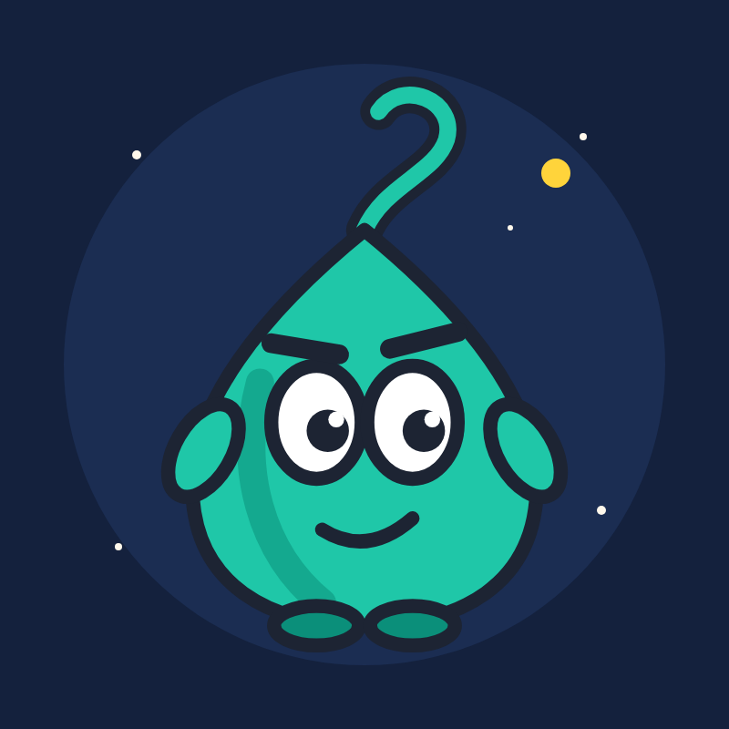

WonderquirkTV
Fun, curiosity-driven explainers for adults — with Quirk, the droplet who can't stop asking why.
Watch
New episodes on YouTube: youtube.com/@WonderquirkTV
- What If? — wild hypotheticals, real science.
- Body Glitches — the strange bugs and hidden features of the human body.
- Brain Bugs — the ways your own brain fools you.
- History's Worst Ideas — the most absurd decisions in history, and what they teach.
- …and more series as the channel grows.
About the production tools
WonderquirkTV is made by a single creator with a small private toolset ("Wonderquirk Office") that runs on the creator's own computer. It reads the channel's own YouTube statistics, read-only, to learn which episodes work. See the privacy policy.